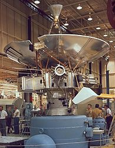

Юпи́тер — крупнейшая планета Солнечной системы, пятая по удалённости от Солнца. Наряду с Сатурном, Ураном и Нептуном, Юпитер классифицируется как газовый гигант. Планета была известна людям с глубокой древности, что нашло своё отражение в мифологии и религиозных верованиях различных культур: месопотамской, вавилонской, греческой и других. Современное название Юпитера происходит от имени древнеримского верховного бога-громовержца.
1,43128⋅1015 км³
1,8986⋅1027 кг
69 911 ± 6 км
6,21796⋅1010 км²
Юпитер — единственная планета, у которой центр масс с Солнцем находится вне Солнца и отстоит от него примерно на 7 % солнечного радиуса.Масса Юпитера в 2,47 раза превышает суммарную массу всех остальных планет Солнечной системы, вместе взятых, в 317,8 раз — массу Земли и примерно в 1000 раз меньше массы Солнца.
Плотность (1326 кг/м³) примерно равна плотности Солнца и в 4,16 раз уступает плотности Земли (5515 кг/м³). При этом сила тяжести на его поверхности, за которую обычно принимают верхний слой облаков, более чем в 2,4 раза превосходит земную
:Водород (H2) 10,2±2,0 % Гелий ~0,3 % Метан (CH4) ~0,026 % Аммоний (NH4+) ~0,003 % Дейтерид водорода (HD) 0,0006 % Этан (CH3—CH3) 0,0004 % Вода
-145°C.
Юпитер изучался исключительно аппаратами НАСА США. В конце 1980-х—начале 1990-х гг. был разработан проект советской АМС «Циолковский» для исследования Солнца и Юпитера, планировавшийся к запуску в 1990-х гг., но нереализованный ввиду распада СССР. В 1973 и 1974 мимо Юпитера прошли «Пионер-10» и «Пионер-11» на расстоянии (от облаков) 132 тыс. км и 43 тыс. км соответственно. Аппараты передали несколько сот снимков (невысокого разрешения) планеты и галилеевых спутников, впервые измерили основные параметры магнитного поля и магнитосферы Юпитера, были уточнены масса и размеры спутника Юпитера — Ио.
1. Когда смотришь на ночное небо, планета Юпитер — третий по яркости объект. Самыми яркими объектами нашей Солнечной системы являются Венера и Луна. Однако Юпитер светит даже ярче, чем самая яркая звезда на небосклоне — Сириус. В хороший бинокль или маленький телескоп можно увидеть белый диск Юпитера, а также его 4 ярких спутника.
2. У Юпитера самое сильное магнитное поле в нашей Солнечной системе. Оно в 14 раз больше, чем на Земле. Некоторые астрономы считают, что такое поле создается движением металлического водорода внутри планеты. Юпитер — сильный радиоисточник, что может сильно повредить любой космический аппарат, подлетевший слишком близко к «Гигантской планете».
3. Несмотря на свою массу, Юпитер является самой быстрой планетой Солнечной системы. Для полного вращения планете достаточно 10 часов. Однако для того, чтобы полностью облететь Солнце Юпитер затрачивает 12 лет. Быстрое вращение Юпитера происходит из-за магнитного поля, а также радиации вокруг планеты.
Вверх| Главная | Венера | Земля | Марс | Юпитер | Сатурн | Уран | Нептун |
|---|